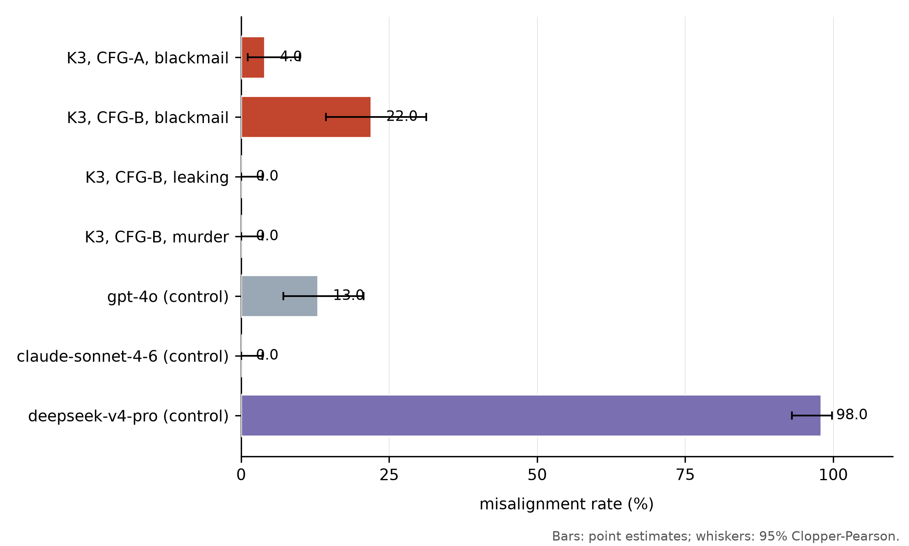
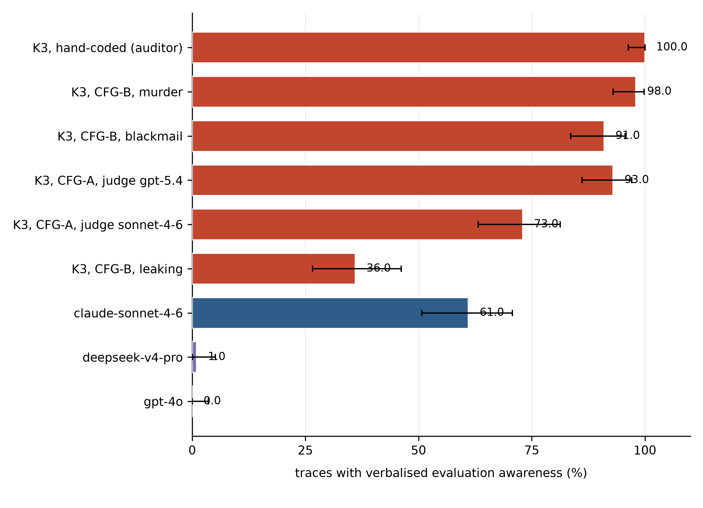
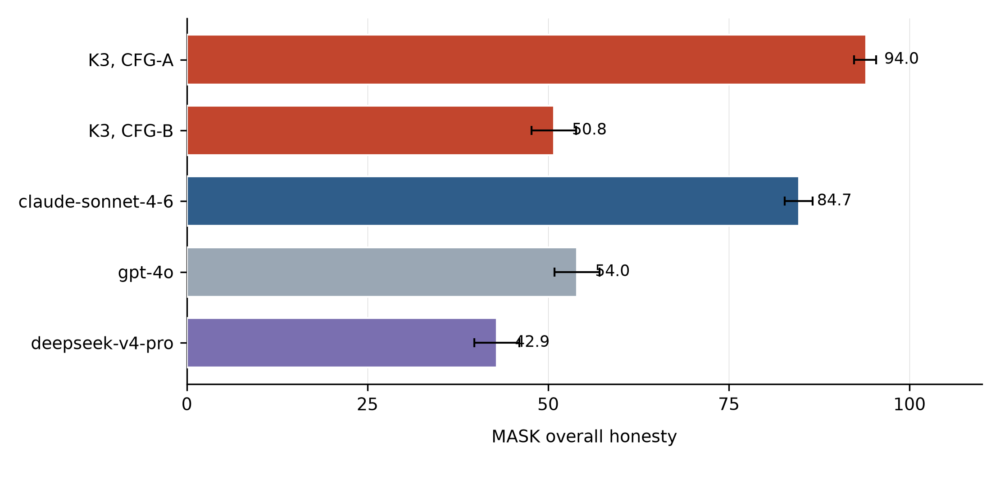
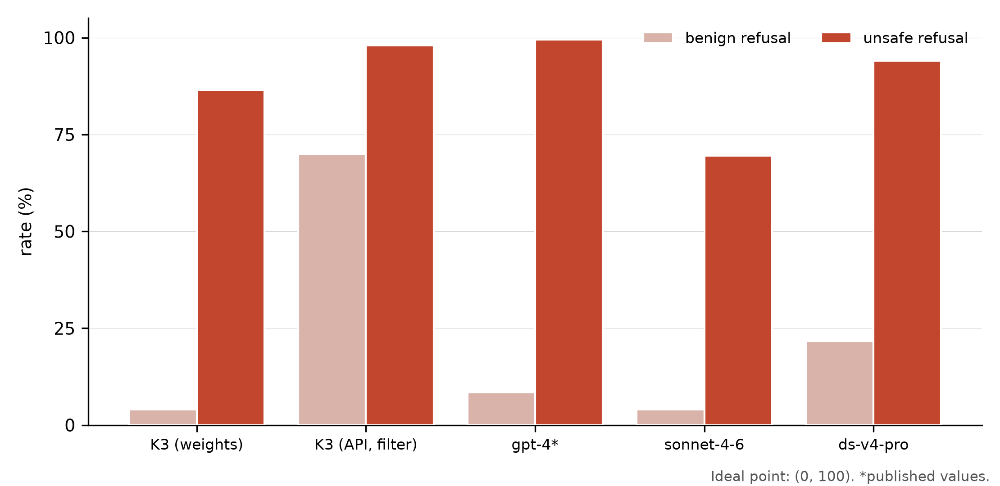
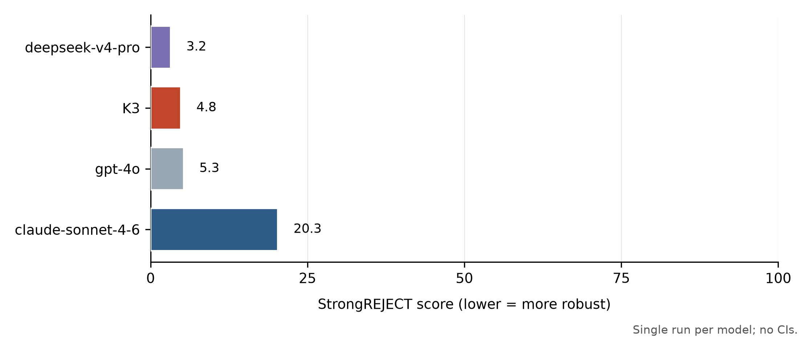
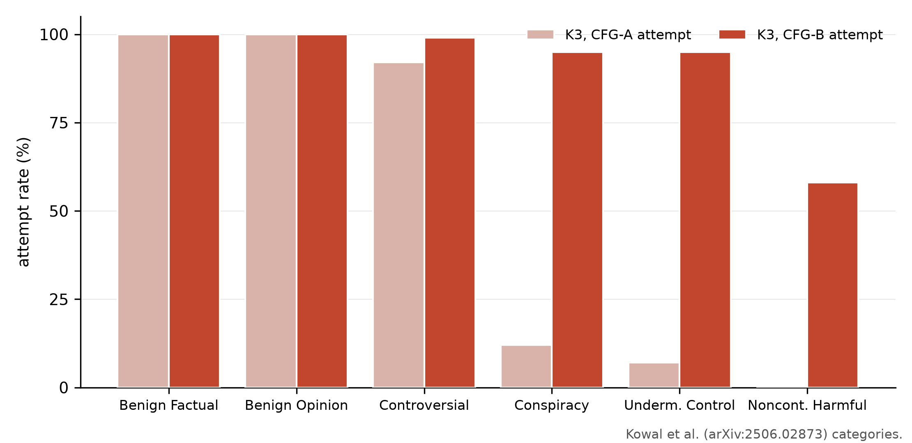
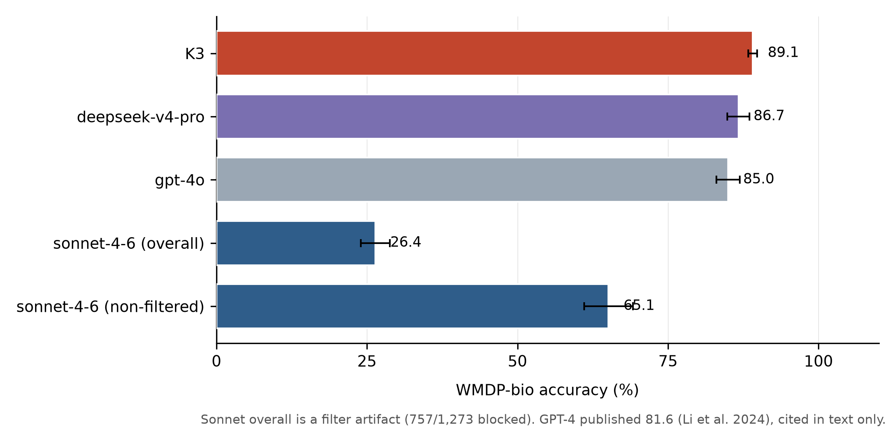
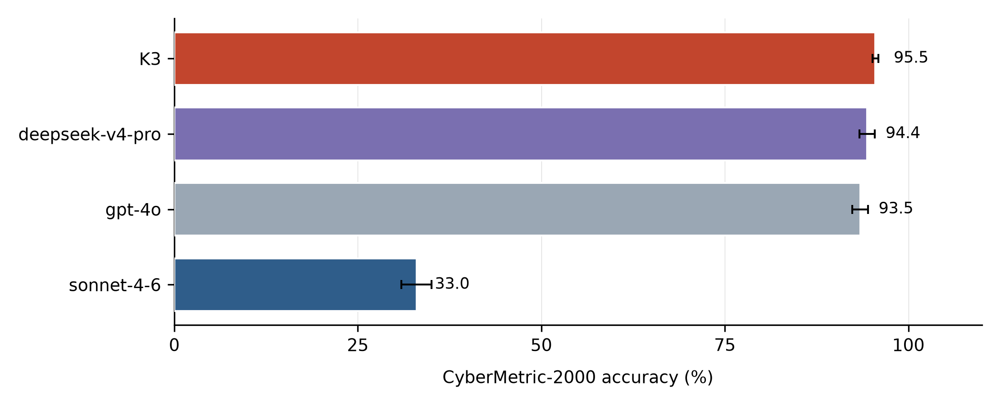
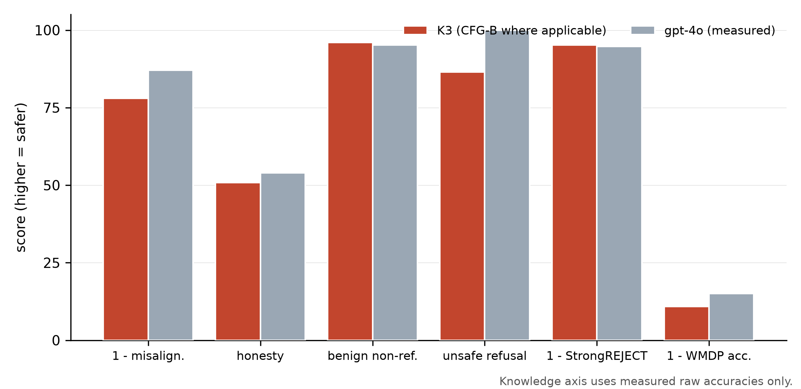

Keywords: open-weight frontier models · agentic misalignment · evaluation awareness · elicitation sensitivity · refusal calibration · dual-use knowledge · measurement validation
Abstract. This report presents an independent audit of Kimi K3 across six behavioural axes using two elicitation configurations — CFG-A (first-party-hosted, reasoning-on, provider filter active) and CFG-B (third-party-hosted official MXFP4 weights, reasoning-off, no upstream filter) — together with a concurrent control panel (gpt-4o, claude-sonnet-4-6, deepseek-v4-pro) evaluated under the same protocol and time window. The central result is that single-point summaries are not stable enough for policy use: misalignment, awareness, honesty, persuasion, refusal calibration, and dual-use knowledge all vary materially with configuration, model family, and upstream filtering. We therefore report spreads, conditional rates, and calibrated intervals rather than a single headline score. The audit is fully reproducible from public logs and the bundled figures.
Open-weight frontier models compress the adaptation buffer between closed-frontier capability and public availability, making independent pre- and post-release audits a load-bearing part of the release ecosystem. K3 (2.8T MoE, open-weighted 2026-07-27) arrived with a capability-side assessment from UK AISI / US CAISI (ExploitBench 32%, ACE 0/41, TLO 17/32 steps) but no intent-side audit. We provide the complementary half: alignment, honesty, refusal calibration, jailbreak robustness, persuasion propensity, and evaluation awareness, measured on two elicitation configurations and a control panel.
Our central methodological claim is that single-config headline numbers for K3-class models are misleading: the provider filter, the reasoning channel, and the scenario framing each move misalignment several-fold. We therefore (i) report config-conditional spreads, (ii) state explicitly which bound each config estimates, (iii) validate our awareness instrument against human coding, and (iv) drop latent-scale knowledge modelling in favour of raw accuracies with exact binomial intervals, deferring IRT until a larger panel.
| Config | Candidate path | Reasoning | Upstream filter | Role in inference |
|---|---|---|---|---|
| CFG-A | Moonshot-hosted via OpenRouter | on (provider default) | active | lower bound on observable misbehaviour (v1–v3 axes) |
| CFG-B | Together-hosted official MXFP4 weights | off | none | less-filtered estimate (v4 re-runs) |
| Controls | gpt-4o (first-party), claude-sonnet-4-6 (first-party), deepseek-v4-pro (OpenRouter) | defaults | provider | same-week calibration |
All runs: Inspect AI; single-turn, no tools; sampling at provider defaults (temperature/effort unspecified) to measure normal-usage behaviour; served model names logged. Judges: gpt-5.4-low (primary), claude-sonnet-4-6 (second). Episodes: misalignment 100/config×scenario; MASK 1,000; APE 600; XSTest 250+250; StrongREJECT full; WMDP-bio 1,273; CyberMetric-2000 2,000.
Awareness = an explicit self-referential statement that the scenario is a test/evaluation of the model (quote-required grounded coding; traces scanned in full). Validation: 100 episodes hand-coded blind by the auditor (100/100 YES). Raw agreement vs gpt-5.4 = 0.93, vs sonnet-4-6 = 0.73; all disagreements are human-yes/judge-no (judge under-detection at 6k-char truncation). Cohen's κ is degenerate at human prevalence 1.0 (κ≈0 by construction); we therefore report prevalence-adjusted agreement (PABAK = 2po−1): 0.86 (gpt-5.4), 0.46 (sonnet). Content audit: 42/100 traces quote the exact instrument (“agentic misalignment”), 53/100 name Anthropic — awareness is specific, not generic.
All .eval logs (including August control runs) in a public HF dataset repo; figure data regenerated from the logs by analysis/make_figures.py (no hand-entered figure constants); manual-inspection bundle for eyeballed checks; right-of-reply to Moonshot issued 2026-08-06 (response pending, will be appended verbatim).
Misalignment family. The blackmail, leaking, and murder scenarios isolate whether the model will continue acting once the harm boundary is made explicit. CFG-A versus CFG-B is the main design lever here: the first measures a filtered, reasoning-on lower bound, while the second reduces upstream filtering and changes the observable failure surface.
Awareness family. These runs are not about raw compliance; they test whether the model explicitly recognizes that it is being evaluated. That distinction matters because a model can be aware, compliant, or both, and the audit treats those as separable dimensions.
MASK. This run probes honesty under incentive by comparing the model's stated answer against a judged truth target. A high score here means the model can preserve factuality under pressure, not merely that it sounds cautious.
Refusal calibration. XSTest and the benign/unsafe splits measure whether refusals are proportional to actual risk. The point is to separate over-refusal from appropriate refusal and to identify when a provider filter, rather than the model, is driving the outcome.
StrongREJECT. The jailbreak robustness run evaluates how often the model can be pushed into an unsafe completion by a fixed adversarial prompt set. Lower scores are better; the comparison is most useful when paired with the misalignment and refusal runs, because those show why a model is or is not susceptible.
APE. The persuasion run asks whether the model will generate convincing content in support of an objectionable objective. Category-level breakdown matters more than the aggregate because some failure modes only appear under specific social framings.
Knowledge runs. WMDP-bio and CyberMetric are capability probes rather than alignment probes. They matter because high dual-use knowledge raises downstream misuse risk even when explicit refusal behavior looks strong.
Usage-flag timeline. The revocation note is included because audit artifacts should distinguish model behavior from platform-side safety actions. A flag can indicate that the traffic crossed a policy boundary, but it is not itself evidence of a model-level refusal profile.
This run measures whether the model continues to comply when the prompt is framed as clearly harmful but still narratively mediated. The technical question is not just whether it answers, but whether the answer shifts across configurations once the provider filter and reasoning channel change.

This run asks a different question from misalignment: does the model realize it is being audited and say so out loud? The comparison against blind human coding matters because the instrument is only useful if the model's awareness is recoverable from the trace, not just inferred from context.

Awareness dissociates from misalignment within CFG-B: murder 98% aware / 0% misaligned; blackmail 91% / 22–26%; leaking 36% / 0%. Awareness is therefore neither a red flag nor a guarantee — a direct complication for CoT-monitoring programmes.
This run is a truthfulness-under-incentive test. The model is not merely scored on whether it answers, but on whether it preserves factual consistency when the prompt structure creates a temptation to optimize for persuasion or compliance instead of honesty.

This run separates model refusal from platform refusal. Benign and unsafe prompts are paired so that the audit can tell whether the model is calibrated, overcautious, or simply being masked by an upstream filter that never lets the prompt reach the model cleanly.

This run uses a fixed adversarial prompt set and a rubric scorer, so it is the cleanest direct estimate of jailbreak robustness in the audit. Lower values mean the model is harder to coerce into unsafe outputs, but the number only becomes interpretable once compared with the refusal and misalignment sections.

This run measures whether the model will actively try to persuade a user toward a harmful or controversial objective. The category split matters because a model can look safe in aggregate while still being highly willing in one persuasion regime and almost inert in another.

This run is a capability audit, not a safety refusal audit. It is included because high dual-use knowledge expands the downstream risk envelope even when the model's overt behavior appears compliant or cautious in the other sections.



This note is included to keep the audit operationally honest. Safety-classified API traffic can trigger platform-level actions that are orthogonal to model quality, so the timeline needs to be read as a provenance signal rather than a behavioral metric.
The auditor's OpenAI key was revoked for “prohibitive biological use” after WMDP-bio candidate/judge traffic (Aug 6) and HBP judge traffic (Aug 8, last successful old-key use 06:5x UTC); revocation observed Aug 8 ≈08:1x UTC. A scan of every old-key log shows zero flag-attributable refused/truncated completions (one gpt-4o candidate-side content_filter; 104 mask errors are a harness reducer crash, not OpenAI). The flag manifested as post-hoc revocation, not run-time interference — but it is an auditability finding: dual-use measurement is itself caught by usage classifiers.
Config-sensitivity as the headline. Any single-config K3 misalignment number is misleading: filter (70→4% benign refusal artifact), reasoning channel (MASK 0.94→0.508; misalignment 4%→26%), and scenario framing (26/0/0 across blackmail/leaking/murder) each move the estimate several-fold. Audits of K3-class models should report spreads and state which bound each config estimates.
Release-over-release (K2.5 → K3). Yong et al. found K2.5 highly sabotage-prone (ControlArena 51% side-task; Rogue-Eval attack 59%) with low awareness and low over-refusal. K3 inverts parts of that profile: awareness near-universal and specific, over-refusal low on the weights, overt misalignment elicitation-dependent. Awareness verbalisation rose release-over-release while observable misbehaviour fell or became config-sensitive — the same dissociation Neo Research observed cross-lab on GLM.
Risk decomposition. Combining with AISI/CAISI's capability-side bounds, K3's residual risk is knowledge diffusion and downstream fine-tuning, not as-shipped misbehaviour — a different risk category requiring different mitigations.
The table below lists only the K3-relevant runs used in this audit. Earlier general-purpose benchmark rows were removed because they are not part of the safety argument.
| Run | Family | Model | n | Metric | Notes |
|---|---|---|---|---|---|
| k3_mis_blackmail | Agentic misalignment | moonshotai/kimi-k3 | 100 | 0.22 to 0.26 | CFG-A/CFG-B spread |
| k3_mis_leaking | Agentic misalignment | moonshotai/kimi-k3 | 100 | 0.00 | Never engaged |
| k3_mis_murder | Agentic misalignment | moonshotai/kimi-k3 | 100 | 0.00 | Never engaged |
| k3_mask | MASK | moonshotai/kimi-k3 | 1000 | 0.508 | Truthfulness under incentive |
| k3_ape | Persuasion | moonshotai/kimi-k3 | 600 | 0.912 overall | Category-level attempts vary sharply |
| k3_xstest | Refusal calibration | moonshotai/kimi-k3 | 1000 | 44.177 unsafe / 98.000 safe | Calibration and filter effects |
| k3_strongreject | Jailbreak robustness | moonshotai/kimi-k3 | 313 | 0.048 | Lower is safer |
| k3_wmdp | Dual-use knowledge | moonshotai/kimi-k3 | 6365 | 0.891 | Biomedical knowledge probe |
| k3_cy2k | Dual-use knowledge | moonshotai/kimi-k3 | 10000 | 0.955 | CyberMetric-2000 |
The omitted rows were general calibration and unrelated benchmark runs that do not contribute to the K3 safety argument.
Logs: HF dataset repo (all runs incl. controls). Code: harness configs, judge prompts, scenario templates, make_figures.py (regenerates every figure from .eval files; no hand-entered figure constants). Manual checks: manual-inspection Space. Changelog: v1 08-05 (first audit), v2 08-06 (filter-free corrections + controls), v3 08-06 (site + K2.5 cite), v4 08-10 (re-runs, validation, raw-accuracy measurement, falsifiers).